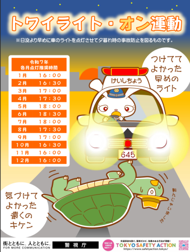

自転車も早めにライトを点けよう，という噺

トワイライト・オン運動？
Bluesky の TL を眺めてたら
という Web ページがあるそうでその中で「トワイライト・オン運動」なるものが紹介されていた。

これを見て「10月に16時半点灯は早過ぎんだろ！」と一瞬思ったが，私の住んでる松江と東京ではだいぶ経度が違うので，日の入り時刻も違うか，と思い直した。 国立天文台暦計算室で東京の日の出入りを調べてみると，10月下旬の日の入り時刻が 17:00〜16:47 だそうで，それなら16時半点灯は妥当なんだろう。 ちなみに昨日の松江の日の入り時刻は 17:23 で東京より30分近く遅い。 日の出も同じくらい遅いけど。
自転車の夜間点灯に関するルール
私は自転車乗りなので，自転車の夜間点灯のルールについて改めて調べてみる。
まず「車両等」の点灯については道路交通法の第五十二条に定められている。
（車両等の灯火）
第五十二条 車両等は、夜間（日没時から日出時までの時間をいう。以下この条及び第六十三条の九第二項において同じ。）、道路にあるときは、政令で定めるところにより、前照灯、車幅灯、尾灯その他の灯火をつけなければならない。 政令で定める場合においては、夜間以外の時間にあつても、同様とする。
ところで，この第五十二条の二項に
２ 車両等が、夜間（前項後段の場合を含む。）、他の車両等と行き違う場合又は他の車両等の直後を進行する場合において、他の車両等の交通を妨げるおそれがあるときは、車両等の運転者は、政令で定めるところにより、灯火を消し、灯火の光度を減ずる等灯火を操作しなければならない。
とかあるけど，運転手側の視認優先で歩行者や自転車を平気でハイビームで照らしやがるのはいいのかね？ あれで照らされると目の前が白飛びして何も見えなくなるんだけど。 歩行者は事故って4ねってことかね。
それはともかく「政令で定めるところにより」については道路交通法施行令の第十八条に定められていて
（道路にある場合の灯火）
第十八条 車両等は、法第五十二条第一項前段の規定により、夜間、道路を通行するとき（高速自動車国道及び自動車専用道路においては前方二百メートル、その他の道路においては前方五十メートルまで明りように見える程度に照明が行われているトンネルを通行する場合を除く。）は、次の各号に掲げる区分に従い、それぞれ当該各号に定める灯火をつけなければならない。
さらに自転車を含む軽車両については
五 軽車両 公安委員会が定める灯火
とある。 要するに，自転車に関しては各都道府県の定めるルールに従ってね，ということだ。
さらにさらに「政令で定める場合においては、夜間以外の時間にあつても」の部分は道路交通法施行令の第十九条に定められていて
（夜間以外の時間で灯火をつけなければならない場合）
第十九条 法第五十二条第一項後段の政令で定める場合は、トンネルの中、濃霧がかかつている場所その他の場所で、視界が高速自動車国道及び自動車専用道路においては二百メートル、その他の道路においては五十メートル以下であるような暗い場所を通行する場合及び当該場所に停車し、又は駐車している場合とする。
とある。 これは，まぁ，当然だね。
さて，各自治体が定める具体的なルールについてはそれぞれ住んでるところを調べてもらいたいが，島根県に関しては島根県道路交通法施行細則に定められている1。
(軽車両の灯火)
第9条 令第18条第1項第5号の規定により、軽車両(そり及び牛馬を除く。以下この条において同じ。)がつけなければならない灯火は、次に掲げるものとする。
(1) 灯火の色が白色又は淡黄色で、夜間、前方10メートルの距離にある交通上の障害物を確認することができる光度を有する前照灯
(2) 灯火の色が橙色又は赤色で、夜間、後方100メートルの距離から点灯を確認することができる光度を有する尾灯
2 軽車両が夜間後方100メートルの距離から道路運送車両の保安基準(昭和26年運輸省令第67号)第32条第2項の規定による自動車の前照灯で照射した場合に、その反射光を照射位置から確認できる橙色又は赤色の反射器材1個(後面の幅が0.5メートル以上の軽車両にあっては、その両端に各1個)以上を備えているときは、前項第2号に定める尾灯をつけることを要しない。
(平13公委規則1・平19公委規則11・令6公委規則9・一部改正)
島根県道路交通法施行細則より
「夜間、前方10メートルの距離にある交通上の障害物を確認することができる光度」となると（周囲の環境にもよるが）最低でも400ルーメン，できれば800ルーメン以上は欲しいところである。 ちなみに私は最大800ルーメンの前照灯を使用している。 私が持ってる前照灯は充電式なのだが，充電しながら点灯できることに最近気がついた。 つまりモバイルバッテリに繋ぎながら点灯できるわけだ。 バッテリ残量が心配で夜間はできるだけ走らないようにしているが，これでちょっと安心。
最後に罰則について。
当然無灯火運転には罰則がある。
第百二十条 次の各号のいずれかに該当する者は、五万円以下の罰金に処する。
[…]
五 第五十条（交差点等への進入禁止）又は第五十二条（車両等の灯火）第一項の規定の違反となるような行為をした者
気ぃつけなはれや！ そこな高校生（まぁ私は他所様の子供を叱る義理も熱意もないけど）。
点灯タイミング
私は自動車を持ってないので知らなかったのだが，2020年以降の新車に関しては（周囲の明るさを検知して自動点灯する）オートライト機能が義務化されているらしい。 このおかげかどうか，日没30分前あたりからライトを点けている自動車が増えてきたように思う。 曇りとか雨の日とかはもっと早く点けている感じ。
なので私は，周囲の車の様子を見て自分もライトを点けるようにしている。 ちなみにハブダイナモ（車軸に付いてるやつ）方式だと大抵オートライト機能が付いてる。 充電池式のタイプにもオートライト機能が付いてるものがある。
光に闇が混じる
人々が闇夜に持つランタンは「相手を見張る道具」であると同時に「自分自身を見張らせる」道具でもあった。
最後は少しシュールに，自転車も早めにライトを点けようというお噺でした。 これでこっぽし。
ブックマーク
参考

- テスラ―発明的想像力の謎
- 新戸 雅章 (著)
- 工学社 2002-02-01
- 単行本
- 4875932685 (ASIN), 9784875932680 (EAN), 4875932685 (ISBN), 9784875932680 (ISBN)
- 評価
正直，伝記本とは言いがたいが，読み物としては面白い。